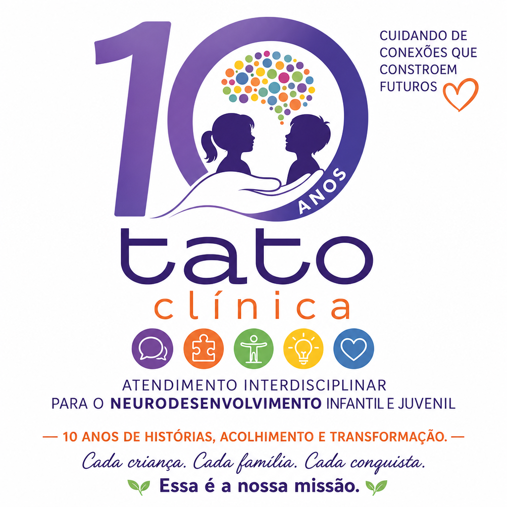

Oferecer atendimento interdisciplinar, humanizado e baseado em evidências, acolhendo cada pessoa de forma integral e individualizada, fortalecendo potencial, autonomia, bem-estar e qualidade de vida em todas as fases.
Clínica Interdisciplinar · Bauru/SP
Uma clínica feita de cuidado e propósito.
Há mais de 10 anos no coração da Vila Mesquita, acompanhamos cada história com dedicação, ciência e humanidade.
0
no mesmo endereço, na Vila Mesquita
0
áreas de atendimento integradas
Todas
as fases da vida acompanhadas

Nossa história
Mais de uma década cuidando de quem importa.
Fundada em 2018 na Vila Mesquita, Bauru/SP, a Tato Clínica nasceu da crença de que cada pessoa, independente da sua condição neurológica, etapa da vida ou desafio de desenvolvimento, merece um cuidado integral, humanizado e baseado em ciência.
O nome Tato vem da essência do nosso trabalho: tocar vidas com sensibilidade. Surgimos como uma clínica de Terapia Ocupacional e Tecnologia Assistiva, e ao longo dos anos fomos crescendo de forma orgânica, sempre seguindo as necessidades das famílias que atendemos e a dedicação dos profissionais que se juntaram à nossa equipe.
Hoje somos uma clínica interdisciplinar com 8 áreas de atendimento integradas, um time de especialistas comprometidos e um único foco: contribuir para que cada paciente viva com mais autonomia, participação e qualidade de vida.
- Mais de 10 anos no endereço
- Vila Mesquita, Bauru/SP
- 8 especialidades
- Atendimento para todas as idades
Ser referência em atendimento interdisciplinar no neurodesenvolvimento, reconhecida pela excelência técnica e pelo acolhimento humano, transformando vidas e contribuindo para uma sociedade mais consciente, acessível e humana.
No que acreditamos
Nossos valores
Humanização
Cuidado com empatia, respeito e sensibilidade, valorizando a singularidade de cada indivíduo.
Acolhimento
Escuta ativa, carinho e segurança para cada paciente e sua família.
Excelência
Atuação com responsabilidade, ética e comprometimento técnico-científico.
Trabalho em equipe
Atuação integrada entre os profissionais para um cuidado completo.
Desenvolvimento contínuo
Busca constante por atualização profissional e aprimoramento dos serviços.
Respeito à individualidade
Reconhecer e estimular o potencial único de cada pessoa.
Inclusão e autonomia
Promover independência, participação social e qualidade de vida.
Compromisso com famílias
Suporte, orientação e parceria durante toda a caminhada terapêutica.
Quem cuida de você
Uma equipe interdisciplinar, unida por um propósito.
Cada profissional da Tato Clínica foi escolhido não apenas pela sua formação técnica, mas pela forma como enxerga o cuidado: com empatia, responsabilidade e comprometimento com a história de cada paciente.
Conheça a equipeVamos cuidar dessa história juntos?
Dê o primeiro passo. Fale com a nossa equipe e agende uma avaliação.